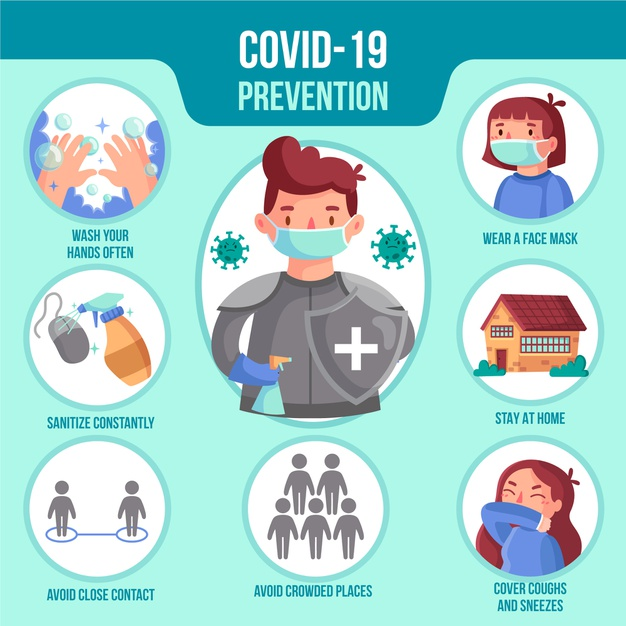

Precauciones

Toma las precauciones adecuadas e infórmate bien para protegerte y cuidar de quienes te rodean.
Sigue las recomendaciones de los organismos de salud pública de tu zona.
Para evitar la propagación de la COVID-19:
• Lávate las manos con frecuencia. Usa agua y jabón o un desinfectante de manos a base de alcohol.
• Mantén una distancia de seguridad con personas que tosan o estornuden.
• Utiliza mascarilla cuando no sea posible mantener el distanciamiento físico.
• No te toques los ojos, la nariz ni la boca.
• Cuando tosas o estornudes, cúbrete la nariz y la boca con el codo flexionado o con un pañuelo.
• Si no te encuentras bien, quédate en casa.
• En caso de que tengas fiebre, tos o dificultad para respirar, busca atención médica.